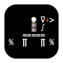

Runs while OAKe is open, across all folders. Saves up to 25 changed files per run; the rest wait for the next one.
Online, only file fingerprints are sent to the timestamp services, never file contents. Offline saves get no external timestamp.
https://oake.example.org
http://127.0.0.1:3000
https://madaralabs.cc
Checking contacts GitHub. Nothing is checked or installed unless you ask.